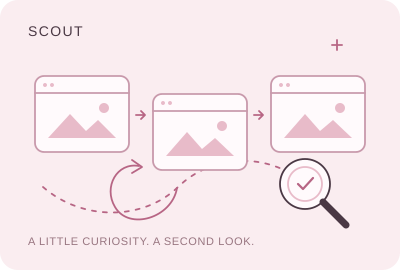
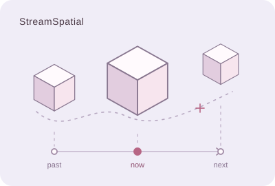
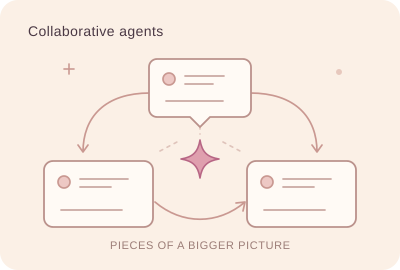

SCOUT: Self-Checking and Recovery-Aware Tool-Thought Agents for Ultra-Long Egocentric Video Reasoning
Recovery-aware agents that search, inspect, and revisit evidence in ultra-long egocentric videos.
PhD student · Sun Yat-sen University
I study how AI sees, remembers, and reasons about a changing world. My research brings together video understanding, spatial intelligence, and multimodal reasoning.
Finding meaningful evidence across long and streaming videos.
Understanding space, motion, and how a scene changes over time.
Building agents that collaborate, reflect, and reason with evidence.
Showing 3 publications.

Recovery-aware agents that search, inspect, and revisit evidence in ultra-long egocentric videos.

A benchmark and memory-based framework for spatial reasoning about the past, present, and future.

Collaborative agents create multimodal mystery games to improve reasoning under incomplete information.
I'd love to exchange ideas about video, space, and intelligent agents.